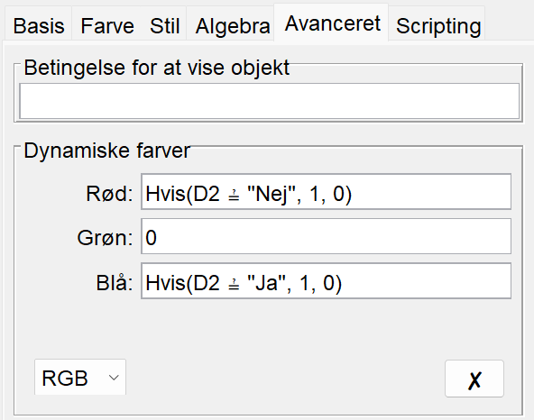

Aktivitet 3 handler om et eksempel på "slow learning" og kan derfor springes over.
Aktivitet 1 - Datasæt
De træningsdata i tabel 1, som vi har brugt i de foregående aktiviteter, er i virkeligheden alt, alt for simple.
Nr. på træningseksempel \(m\)
Kundens alder \(x^{(m)}\)
Targetværdi \(t^{(m)}\)
\(1\)
\(25\)
\(0\)
\(2\)
\(40\)
\(0\)
\(3\)
\(60\)
\(1\)
Tabel 1: Et meget lille træningsdatasæt til Good Food app’en.
For det første er tre træningseksempler alt for få. For det andet kan man jo bare kigge på træningsdata og lave en regel ud fra dem. Det kunne for eksempel være: Hvis kunden er 55 år eller under, så tror vi ikke, at hun vil aktivere tilbuddet, og omvendt hvis kunden er over 55 år. Det behøver man jo ikke fancy AI metoder til at indse! For det tredje er det urealistisk, at alder alene kan afgøre, om en kunde aktiverer et tilbud eller ej. Man vil typisk inddrage andre inputvariable som for eksempel køn, forbrug og så videre.
Vi vil derfor her se på et langt mere realistik eksempel, hvor træningsdatasættet er større og med flere inputvariable.
NoteOpgave 1: Datasæt
Download dette datasæt og prøv at åbne det i Excel.
I datasættet er der tre inputvariable: "alder" (målt i år), "forbrug" (målt i kroner) og "køn" (kon, hvor 0 svarer til kvinder og 1 svarer til mænd). Targetvariablen kaldes for "aktiveret" (hvor "ja" svarer til, at kunden har aktiveret tilbuddet, og "nej" svarer til, at kunden ikke har aktiveret tilbuddet). Vi har altså følgende inputvariable:
\(x_1\): kundens alder målt i år
\(x_2\): kundens forbrug i Good Food den seneste måned målt i kr.
\(x_3\): kundens køn (0 svarer til kvinder og 1 svarer til mænd)
I den næste opgave skal vi lave to plots for at visualisere datasættet.
NoteOpgave 2: Plots
Vi laver først et plot for kvinderne.
Start med at kopiere den første halvdel af datasættet over i et regneark i GeoGebra svarende til data for alle kvinderne, det vil sige, hvor "kon=0" (heldigvis er datasættet sorteret efter "kon", så det er lige til at gå til).
I celle E2 skriver du (A2,B2). Det giver dig koordinatsættet for alder og forbrug for det første træningseksempel.
Tag ved den lille kasse i nederste hjørne af celle E2 og trække ned, så du får udfyldt kolonne E for hele datasættet.
Gå over i "Tegneblokken" og ændr på akserne, så du kan se alle punkterne1.
Gå tilbage til regnearket og markér alle punkterne i kolonne E. Højreklik og vælg "vis navn" (det skulle gerne fjerne navngivningen af punkterne i koordinatsystemet).
Vi vil nu farve de punkter, som svarer til et træningseksempel, hvor tilbuddet et blevet aktiveret for blåt og tilsvarende rødt, hvis tilbuddet ikke er blevet aktiveret. Husk på at denne information findes i kolonne D.
Markér det første punkt i celle E2. Højreklik og vælg "Egenskaber". Vælg her fanen "Avanceret".
I det felt, hvor der står "Rød", skriver du If(D2="Nej",1,0).
I det felt, hvor der står "Grøn", skriver du 0.
I det felt, hvor der står "Blå", skriver du If(D2="Ja",1,0).
Det kommer til at se sådan her ud (hvis du har GeoGebra på dansk bliver "If" lavet om til "Hvis"):

Forklaring: I GeoGebra repræsenteres farver ved hjælp af en rød/grøn/blå (RGB) farvemodel. Mængden af rød repræsenteres her som et tal mellem 0 og 1 og tilsvarende med grøn og blå. Når vi i feltet ved "Rød" skriver If(D2="Nej",1,0), så betyder det, at hvis værdien i celle D2 er "Nej" (kunden har ikke aktiveret tilbuddet), så skal mængden af rød være 1 og 0 ellers. Og tilsvarende for mængden af blå, hvis D2 har værdien "Ja".
Marker igen celle E2 og tag ved den lille kasse i nederste hjørne af celle E2 og trække ned, så du igen får udfyldt kolonne E for hele datasættet. Punkterne skulle nu gerne være farvet som ønsket.
Indsæt nogle tekstfelter i tegneblokken (tryk på ikonet "Skyder" og vælg "Tekst"): Angiv, hvad der er ud af akserne, hvad de røde og blå punkter betyder, og at plottet er for kvinder.
Indlæg i dette koordinatsystem en ret linje, som (for de fleste punkter) vil kunne bruges til at adskille de blå punkter fra de røde? Notér ligningen for en sådan linje.
Gem dokumentet med plot og linje for kvinderne.
Lav et tilsvarende plot for mændene. Det kan for eksempel gøres ved at gemme dokumentet for kvinderne og kopiere data for mændene fra Excel arket ind i regnearket i GeoGebra. Lav også en linje på plottet for mændene, som bedst muligt adskiller de røde punkter fra de blå.
Behold de to GeoGebra dokumenter med plot og linje for hvert køn. Du skal bruge dem senere!
1 Tryk på ikonet "Flyt tegnefladen" og hold cursoren henover for eksempel \(y\)-aksen. Når cursoren ændrer sig til en dobbeltpil, kan du ved at holde venstre musetast nede ændre på enhederne på aksen.
Aktivitet 2 - Brug af app
I denne aktivitet skal vi træne en kunstig neuron på datasættet fra opgave 1. Det vil sige, at vi skal have bestemt vægtene \(w_0\), \(w_1\), \(w_2\) og \(w_3\), så vi kan bruge sigmoid-funktionen til at beregne outputværdien \(o\):
Under fanen "Data" uploader du datasættet (tryk på "Browse…") og tryk derefter på "Næste".
Under fanen "Variable" gør du følgende:
Vælg "Aktiveret" som target-variabel.
Vælg "Ja" som target-værdi.
Vælg "Alder", "Forbrug" og "Kon" som feature-variable (det vil sige inputvariable). Og sørg for at indtaste dem i den rækkefølge.
Tryk på "Næste".
Under fanen "Træning" gør du følgende:
Sæt startvægtene til \(0\).
Behold en learning rate (\(\eta\)) på \(0.001\).
Behold antal iterationer på \(1000\).
Behold "Squared” som tabsfunktion.
Behold "Sigmoid" som aktiveringsfunktion.
Behold fluebenet ved "Brug feature-skalering".
Tryk på "Kør modellen".
Vi starter med at undersøge, om det ser ud som om, at vi har fundet et minimum for tabsfunktionen. En graf for tabsfunktionen som funktion af antal opdateringer af vægtene ses til højre i app’en, efter at du har trykket på "Kør modellen".
Ser det ud som om, at vi ved den sidste iteration har fundet minimum for tabsfunktionen (flader grafen ud eller er den stadig "på vej nedad bakke")? Notér slutværdien af tabsfunktionen (som står under grafen).
Prøv at sætte antal iterationer til \(10000\) (det tager lige lidt længere tid). Tænker du, at vi har fundet minimum nu?
Notér værdien af vægtene \(w_0\), \(w_1\), \(w_2\) og \(w_3\), som står i tabellen nedenfor grafen.
Notér igen slutværdien af tabsfunktionen. Er værdien af tabsfunktionen blevet mindre sammenlignet med værdien ved \(1000\) iterationer?
NoteOpgave 4: Prædiktion ud fra vægtene
I (1) laver vi en skillelinje ved \(o=0.5\). Det svarer til ligningen:
Vi husker nu på, at \(x_3\) angiver kundens køn. Det vil sige, at for kvinder er \(x_3=0\), og for mænd er \(x_3=1\). Det betyder, at vi kan lave en version af ligningen i (2) for kvinder og en anden for mænd:
Den generelle ligning for en ret linje er på formen
\[
a \cdot x + b \cdot y + c = 0
\]
Vi kan derfor se, at de to ligninger i (3) begge er på formen for en ret linje. I næste opgave skal vi have tegnet de tilhørende rette linjer:
NoteOpgave 5: Skillelinjer
Brug de vægte som du fandt i opgave 3 (med \(10000\) iterationer).
Brug de plots som du lavede i GeoGebra i opgave 2 og indtegn de rette linjer med ligningerne i (3) (du skal selvfølgelig tegne linjen for kvinder i det plot, du lavede for kvinder og tilsvarende med mændene).
Er de to linjer gode til at adskille de blå punkter fra de røde?
Er de to linjer, som er baseret på den kunstige neuron, bedre end de linjer, som du selv tegnede i opgave 2?
På baggrund af de to plots i opgave 5 skal vi have lavet en såkaldt confusion matrix og derefter beregne en klassifikationsnøjagtighed.
NoteOpgave 6: Confusion matrix og klassifikationsnøjagtighed
Brug de to plots med de to skillelinjer, som du indtegnede i opgave 5. I vores eksempel vil det være sådan, at hvis et punkt ligger over skillelinjen, så vil vi prædiktere, at punktet er blåt og omvendt, hvis det ligger under skillelinjen.
Udfyld tabellen herunder – det er denne tabel, som kaldes for en confusion matrix. Når du for eksempel skal udfylde prædikteret blå og faktisk rød, så tæller du (i begge plots) hvor mange røde punkter, som ligger over de to skillelinjer.
Prædikteret blå (tilbud aktiveret)
Prædikteret rød (tilbud ikke-aktiveret)
Faktisk blå (tilbud aktiveret)
Faktisk rød (tilbud ikke-aktiveret)
Den andel af punkterne, som er blevet klassificeret korrekt, kaldes for klassifikationsnøjagtigheden – eller på engelsk classification accuracy (CA).
Udregn på baggrund af din confusion matrix klassifikationsnøjagtigheden. Tjek dit resultat med resultatet fra app’en i opgave 3 (klassifikationsnøjagtigheden står over grafen til højre i fanen "Træning"). Hvis du ikke får det samme, har du nok talt forkert!
Aktivitet 3 - Eksempel på slow learning
I aktivitet 2 i del 3 så vi, at man kan starte et sted på grafen for tabsfunktionen, som resulterer i "slow learning". Det vil sige, at det umiddelbart kan se ud som om, at man har fundet et minimum for tabsfunktionen, men i virkeligheden er man landet i et plateau, hvor værdien af tabsfunktionen kun ændrer sig langsomt.
Vælg de samme indstillinger som i opgave 3, men sæt under fanen "Træning" startvægtene til \(10\) og vælg, at antallet af iterationer skal være \(1000\).
Tryk på "Kør modellen". Ser det ud som om, at vi har fundet et minimum? Notér slutværdien af tabsfunktionen.
Sæt antal iterationer op til \(10000\). Er det bedre?
Prøv med \(35000\) (og hav lidt tålmodighed – det tager lidt tid). Ser det ud som om, at vi har fundet minimum nu? Notér både slutværdien for tabsfunktionen og klassifikationsnøjagtigheden (CA) i dette tilfælde.
Sæt antal iterationer op til \(100000\). Er det bedre? Notér slutværdien for tabsfunktionen og CA.
Sæt antal iterationer op til \(200000\). Notér slutværdien for tabsfunktionen og CA.
Notér nu værdien af vægtene \(w_0\), \(w_1\), \(w_2\) og \(w_3\), som står i tabellen ovenfor grafen for tabsfunktionen i højre side.
Du har måske bemærket, at du har fået nogle andre værdier af vægtene her i opgave 7, end du gjorde i opgave 3. Lad os se lidt nærmere på det.
NoteOpgave 8: Et andet minimum
Brug de vægte som du fandt i opgave 7 (med \(200000\) iterationer).
Brug de plots som du lavede i opgave 2 og indtegn de rette linjer med ligningerne i (3) (du skal selvfølgelig tegne linjen for kvinder i det plot, du lavede for kvinder og tilsvarende med mændene).
I hvert plot har du nu to forskellige linjer, som kan bruges til at adskille de blå punkter fra de røde.
Er den ene linje bedre end den anden?
Sammenlign slutværdien af tabsfunktionen, som du fandt i opgave 3 (hvor startvægtene var sat til \(0\) og antallet af iterationer var \(10000\)) med slutværdien af tabsfunktionen, som du fandt i opgave 7 (hvor startvægtene var sat til \(10\) og antallet af iterationer var \(200000\)). Hvilken værdi er mindst?
Der er her sket det, at vi har fundet to forskellige lokale minima for tabsfunktionen. Strengt taget er der nok ikke tale om minima, men i stedet at vi enten er tæt på et minimum eller at vi er landet på et plateau, så der er svært at komme længere ned, men vi vil alligevel bruge betegnelsen minimum.
Spørgsmålet er, om der i praksis er den store forskel på de to:
Sammenlign slutværdien af CA, som du fandt i opgave 3 (hvor startvægtene var sat til \(0\) og antallet af iterationer var \(10000\)) med CA, som du fandt i opgave 7 (hvor startvægtene var sat til \(10\) og antallet af iterationer var \(200000\)). Er der reelt nogen forskel på hvor god de to forskellige modeller er til at prædiktere på træningsdatasættet?